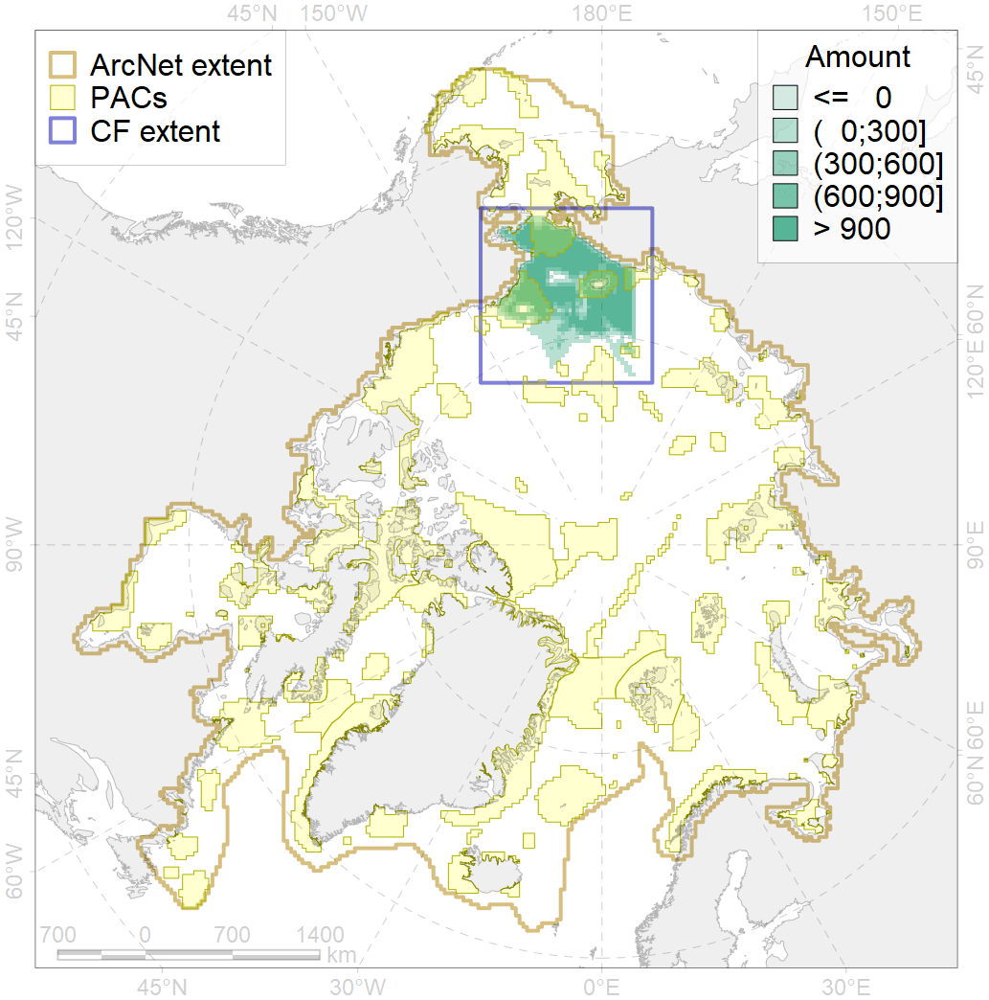
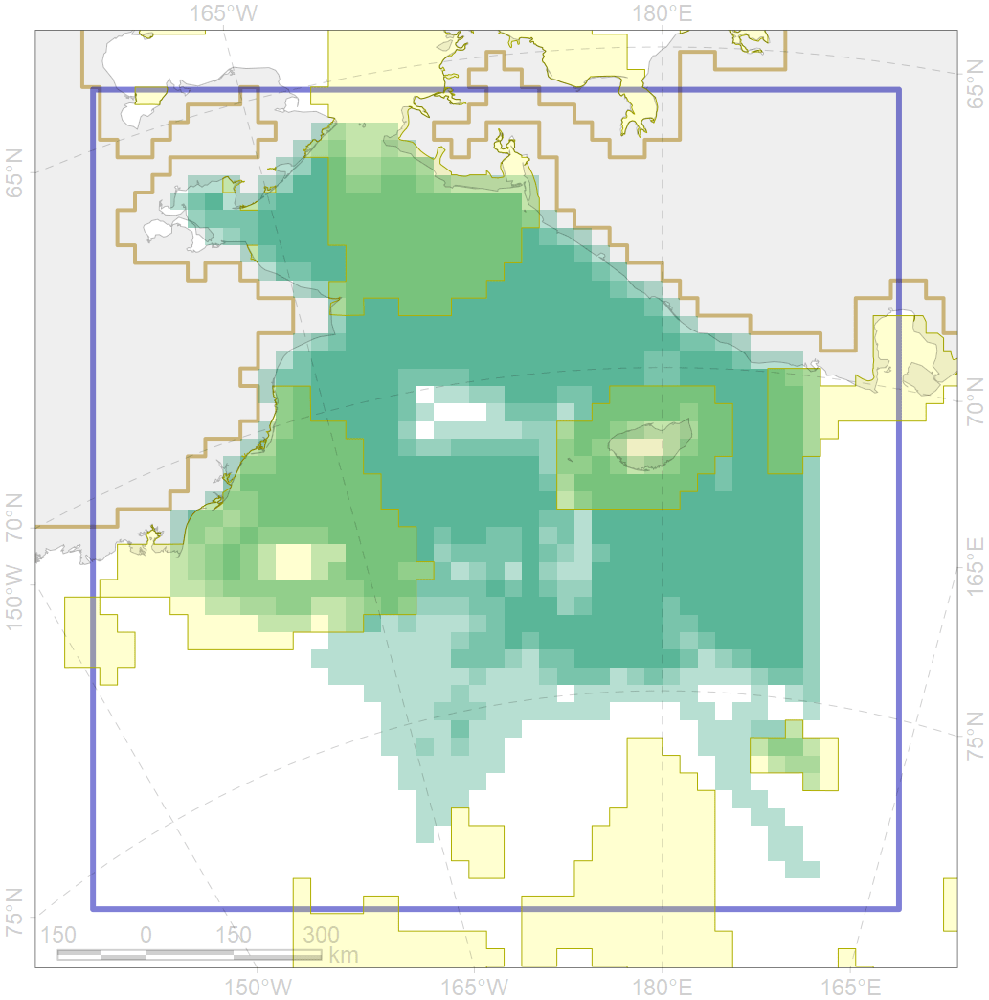

7080

| CF code | 7080 |
| CF name | I.2.1.4. Shelf plains |
| Time Period | At least last 100 years |
| Source(s) | Harris et al., 2014; Carmack, Wassmann, 2006 |
| Seasonality | 1-12 |
| Depth Horizon | Sea floor |
| Methodology | Data obtained from the literature |
| Use Restrictions | Open access |
| Author Name | V. Spiridonov, W. Merritt |
| Notes | |
| Scenario’s Target | 0.03789591 |
| Target Achievement | 0.331 (Scenario: 873.3%) |
| PAC | Share of the Total Amount within the PAC | Share of the Target Achievement for the ArcNet | PAC’s Contribution to the Target Achievement |
|---|---|---|---|
| 5 | 11.5%11.7% | 274.5%276.3% | 31.4%31.6% |
| 6 | 0.0%0.1% | 0.6%1.5% | 0.1%0.2% |
| 7 | 6.6% | 173.3% | 19.8% |
| 8 | 2.1% | 38.5% | 4.4% |
| 57 | 0.5%0.6% | 7.4%9.1% | 0.8%1.0% |
| 60 | 13.6%13.9% | 326.6%329.2% | 37.4%37.7% |
| inner | 34.4%35.0% | 821.0%828.0% | 94.0%94.8% |
| outer | 65.6%67.3% | 52.2%76.9% | 6.0%8.8% |
| † supplement values are for area consistence whereas principal values are for Accenter compatible gridded stats |